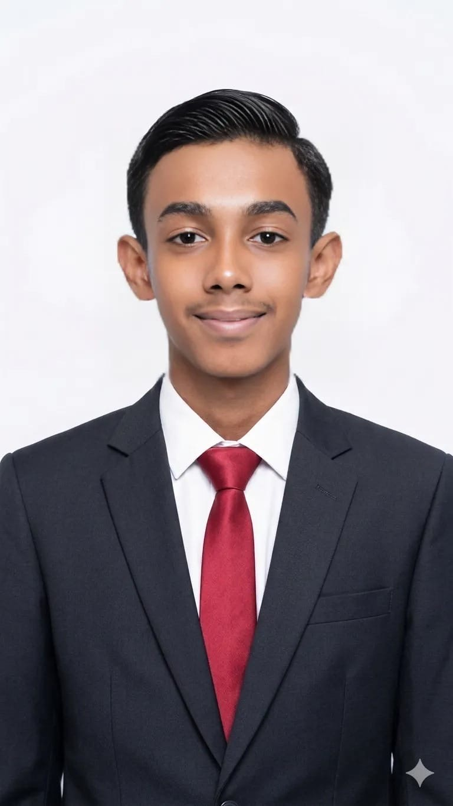
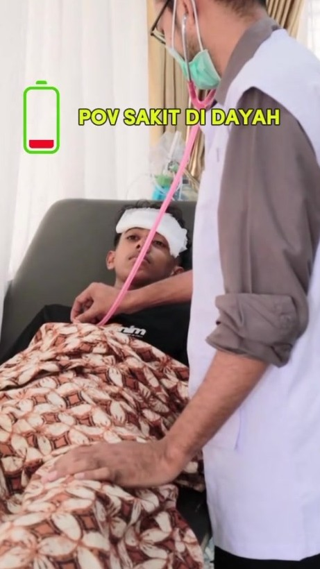
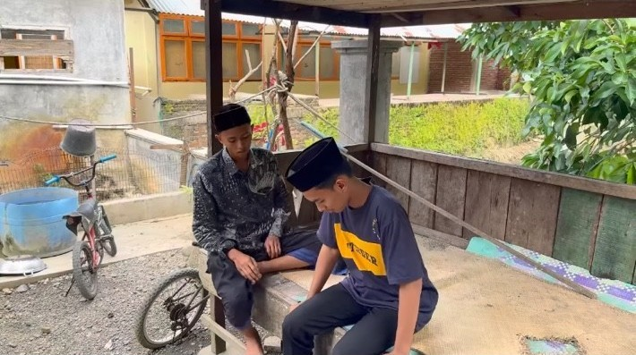
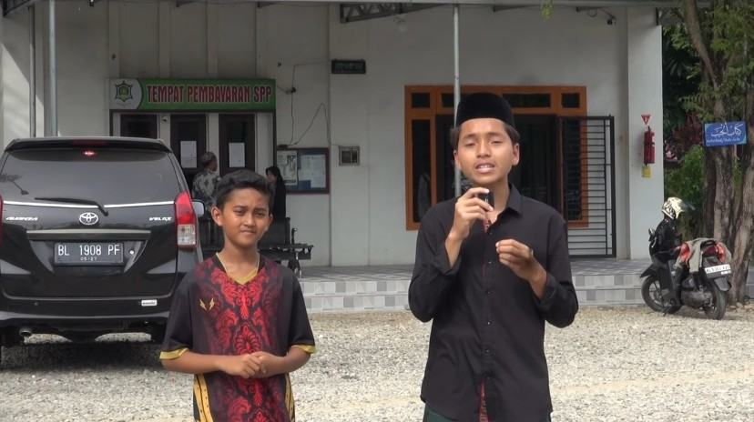

SD Negeri 1 Samalanga
Primary education.
MUDAMMILD.
EXPLORE. LEARN. CREATE.
PERSONAL DIGITAL SPACE
Hi, I'm Mudammild — an Information Systems student who enjoys combining technology, business, visual storytelling and digital content.

Information Systems for Business & Management
President University · 2026–Now01 — ABOUT
Hi, I’m Mudammild, but you can call me Mudam. I’m from Aceh and a graduate of MAS Jeumala Amal. Currently, I’m pursuing a degree in Information Systems for Business and Management at President University.
I have a strong interest in business and technology, particularly in how technology can create innovative solutions and support business growth. At the same time, I enjoy exploring my creative side through photography, visual storytelling, and content creation.
I’m passionate about learning new things, developing my skills, and turning ideas into meaningful projects. Through my journey, I hope to combine technology, business, and creativity to create solutions that are both useful and impactful.
02 — JOURNEY
Primary education.
Junior secondary education.
Natural Sciences (MIPA/IPA). Journalism, media activities, photography and videography.
Information Systems for Business and Management.
03 — SELECTED WORKS
Selected video projects, personal work, and social media content. Click a thumbnail to watch the published work.

▶ WATCH ON TIKTOKTIKTOK · POV / SOCIAL CONTENT
Short-form POV content edited for Mas Jeumala Amal. The video reached approximately 206K views and generated strong engagement.
Role: Video Editor
Watch the original post on TikTok.

▶ WATCH ON YOUTUBESHORT FILM · JEUMALA TV · 2023
A creative film project created for a madrasah competition.
Role: Director · Supporting Actor

▶ WATCH ON YOUTUBEYOUTUBE · JEUMALA TV · 2025
English vlog featuring a day at Dayah Jeumala Amal. 810 views and 39 likes at the time recorded.
Role: Cameraman · Video Editor · Content/Script Planner
SELF-INITIATED · UNPUBLISHED
A personal creative project produced independently for practice and experimentation.
Role: Full Production — Camera · Direction · Editing
The video was not publicly published.
ADDITIONAL EXPERIENCE
Camera operation for YouTube live streams and event documentation at school and organizational activities.
Role: Cameraman04 — SKILLS
Video Editing · Videography · Photography · Visual Storytelling · Content Creation · Camera Operation
CapCut · DaVinci Resolve · Canva · Framing · Composition · Angles · Basic Lighting
Business Information Systems · Business Processes · Systems Thinking · Problem Solving · Digital Technology
HTML · CSS · Programming Fundamentals · Web Projects · Data & Information Management
Business Fundamentals · Management Fundamentals · Entrepreneurship · Business Analysis
Information Systems, web development, programming, data management, business processes and digital content.
05 — ACHIEVEMENTS
06 — CERTIFICATES
Participation · Webinar on YTB scholarship strategy.
Member of the Journalism Department, Organisasi Murid Intra Dayah (OSMID).
Participant · Dayah Jeumala Amal · 27–28 October 2024.
Participant · 26 October 2024.
Participant · 15–16 October 2025.
Participant · Story titled “Rindu”.
1st Place · “Inhale the Confidence, Exhale the Doubt”.
2nd Place · Declamation.
07 — FUTURE DIRECTION
I want to keep developing as an Information Systems student while continuing to grow in video, photography and digital content. My long-term direction is to combine technology, business and creativity to build useful digital experiences and meaningful projects.
08 — CONTACT
For collaboration, creative projects, internships, or simply to connect, feel free to reach out.
Email: mudammild60@gmail.com ↗
Instagram: @si_mudam ↗
LinkedIn: MUDAMMILD BIN SULAIMAN ↗
I DON'T LIMIT MY SELF TO ONE PATH.
I EXPLORE, I LEARN, AND I CREATE